速览
来看看《大乱斗》命中音的波形：只看波形也许不明白，但能看出最初扎实地响一下，然后有余响。在他检查之前声音团队交上来的音，极端地说常常是这种余响很长的样子。他会说明，整理成现在产品版中这样。《大乱斗》是 4 人或 8 人都能玩的游戏，效果音会在画面各处出现，变成声音洪流，很吵；作为能在其中扎实得到手感的效果音制作，请团队意识两点调整。首先起音要强（Attack 强），即让开头更强：有起音要快的意思，也有最开始迎来峰值的意思；要更快——命中的声音稍晚听到可不行，立刻返回攻击的反应很重要；听感上开头需要有上升，但比那更重要的是最开始瞬间就带来强音。其次余响别拖太多：有声音的回响听起来强而气派，但在声音还在响时下一个音响起，就会听惯、糊在一起。《大乱斗》攻防比较快，声音很多时，预料会被淹没到听不清声音的起点；尤其预料会被连段等命中的弱攻击命中音，被连打也要保留连打感。而强攻击实际有顿帧，命中后的画面是停止的，其间效果音也继续流，理想是在停住期间主要的声音就结束。结果方针是「起音强、余响适度」。这取决于游戏方针，但不只是好不好听，要细究是否合游戏目的。
1. 命中音的波形 0:04
看看《大乱斗》命中音的波形：能看出最初扎实地响一下，然后有余响。
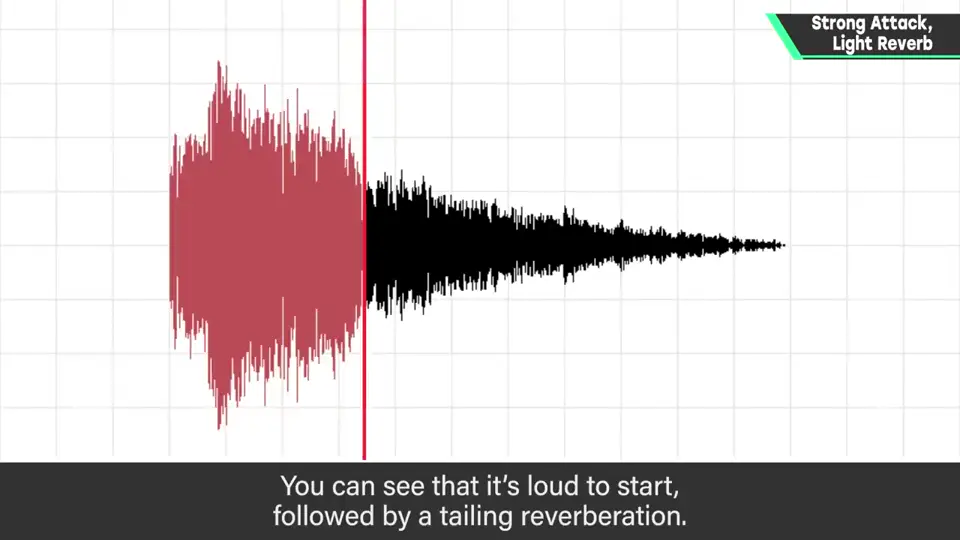
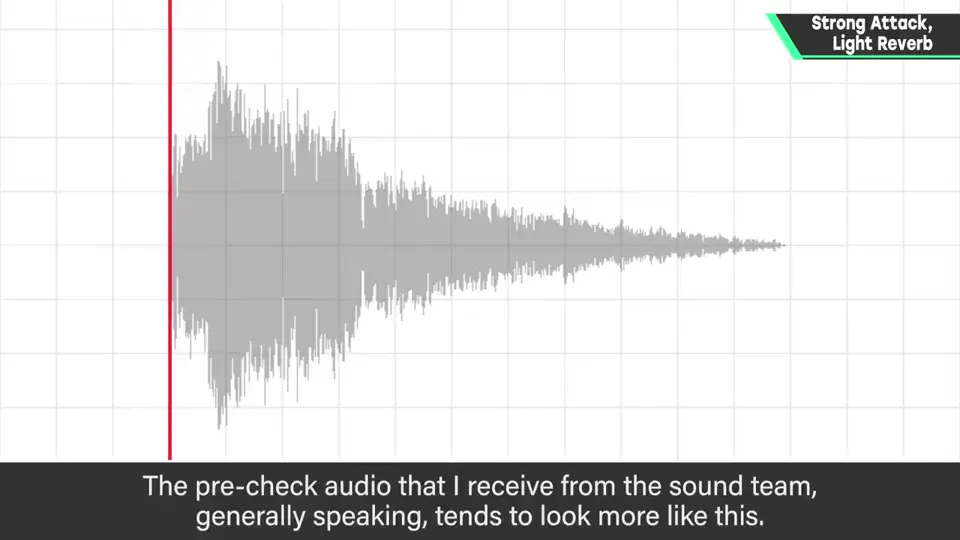
检查前声音团队交上来的音，极端地说，常是余响很长的样子。
2. 声音的洪流 0:36
《大乱斗》是 4 人或 8 人都能玩的游戏，效果音在画面各处出现，变成声音洪流，很吵。
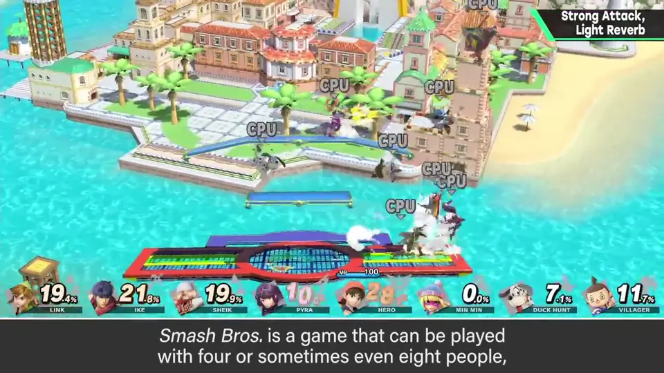
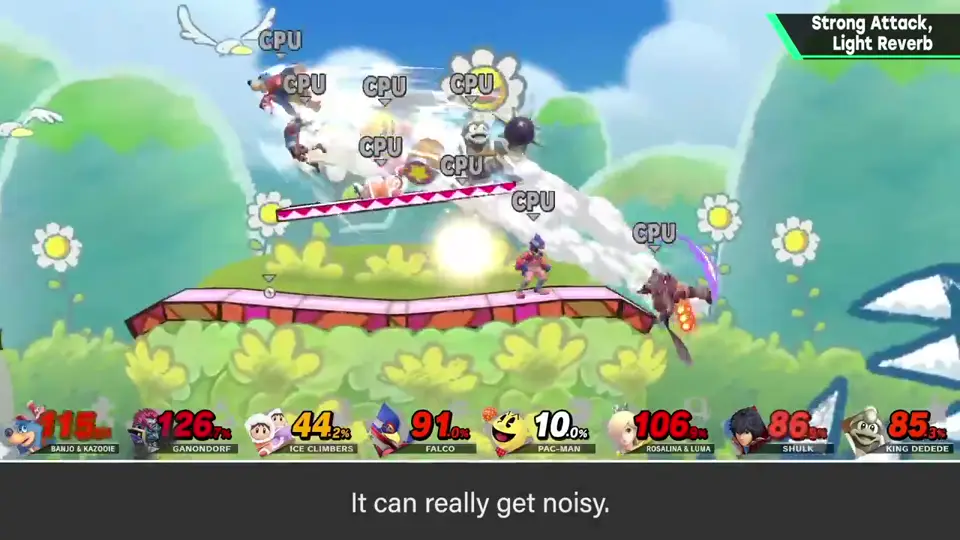
为了在其中扎实得到手感，请团队意识两点调整。
3. 起音要强 0:54
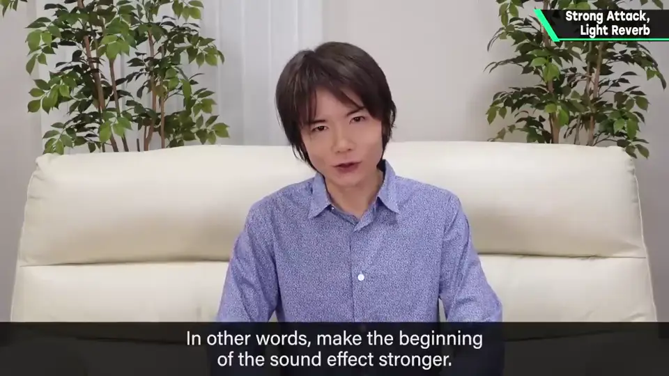
命中的声音稍晚听到可不行：立刻返回攻击的反应很重要。
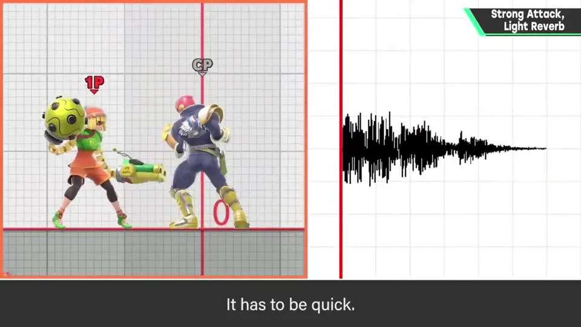
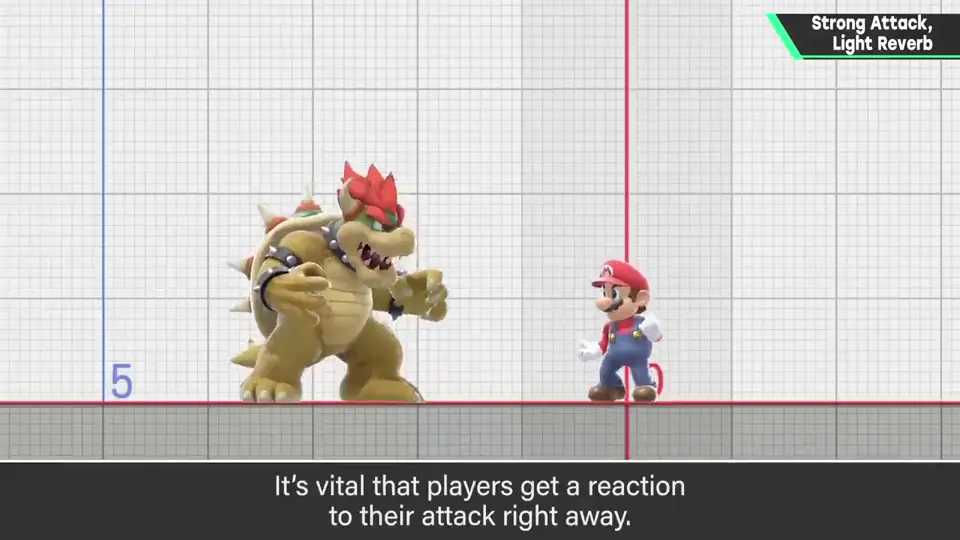
开头需要有上升，但比那更重要的是最开始瞬间就带来强音。
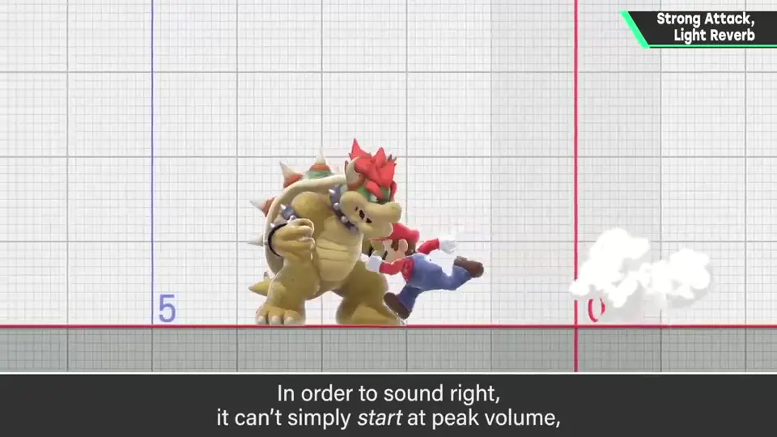
4. 余响别拖 1:34
有声音的回响听起来强而气派，但在还在响时下一个音响起，就会听惯、糊在一起。
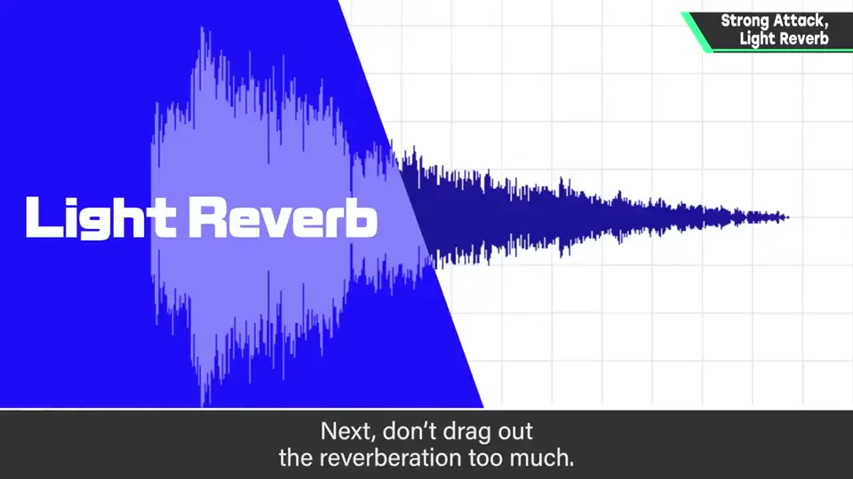
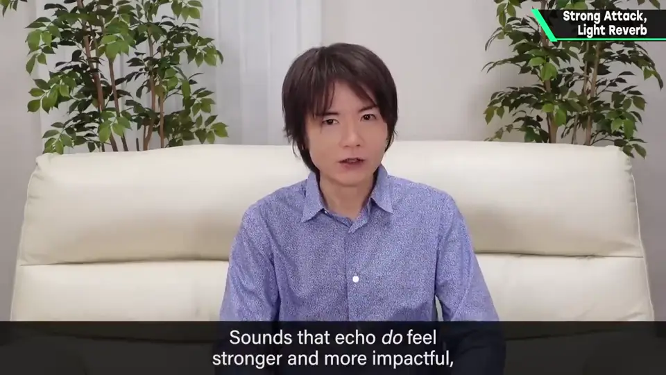
《大乱斗》攻防比较快，声音很多时，预料会被淹没到听不清起点。
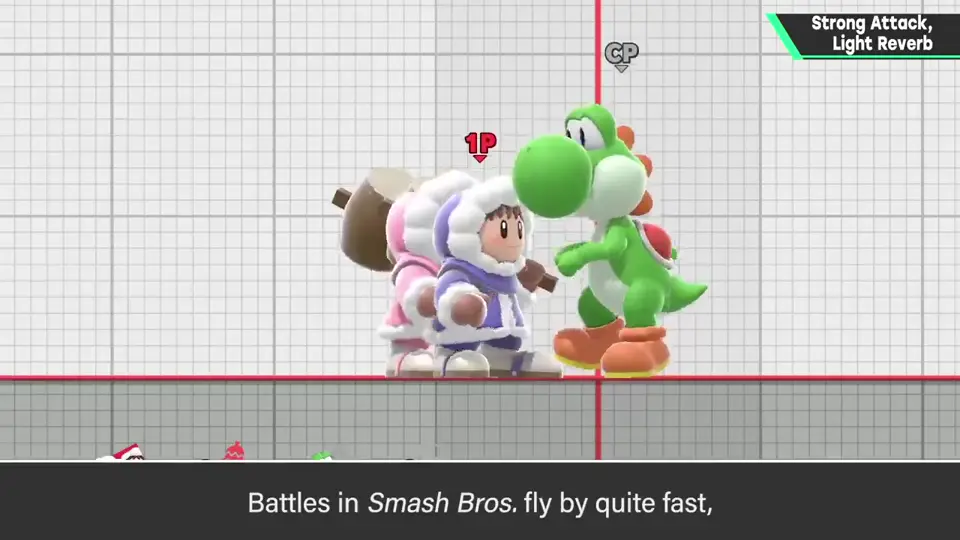
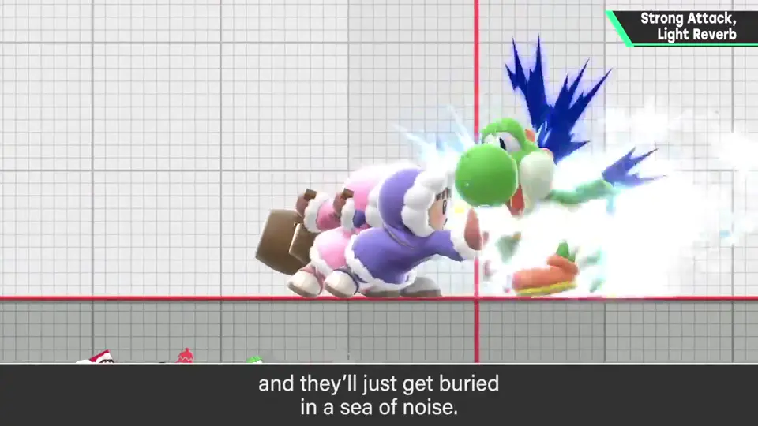
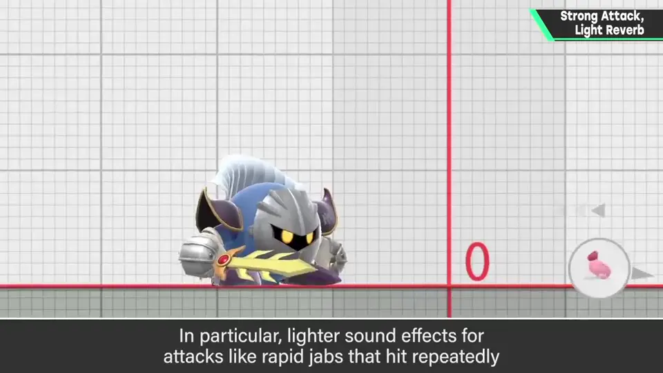
5. 强攻击与顿帧 2:08
强攻击实际有顿帧，命中后的画面是停止的，其间效果音也继续流。
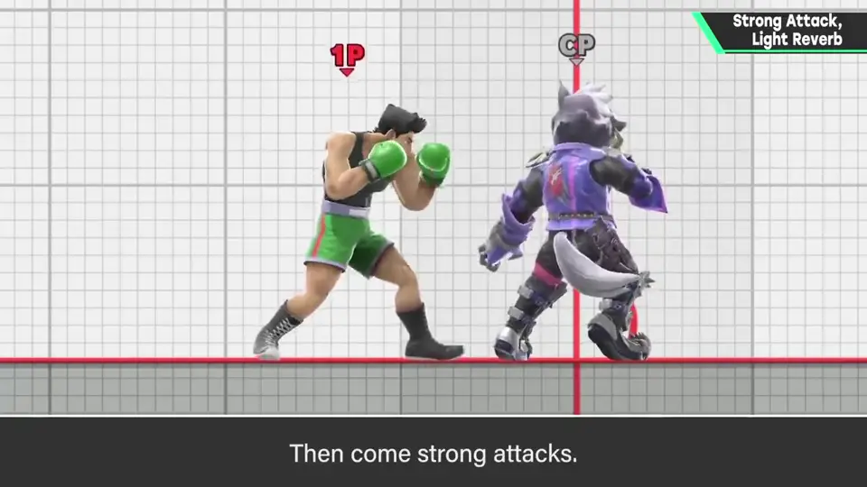
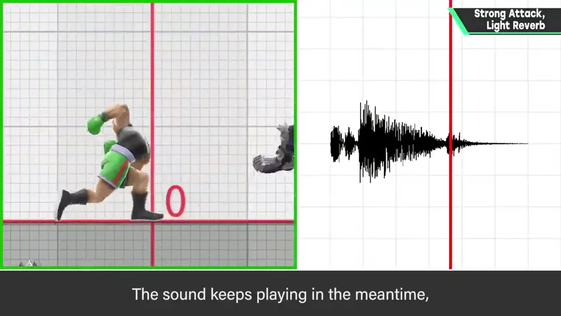
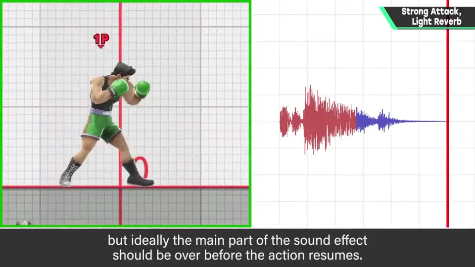
6. 方针 2:32
结果方针是「起音强、余响适度」。
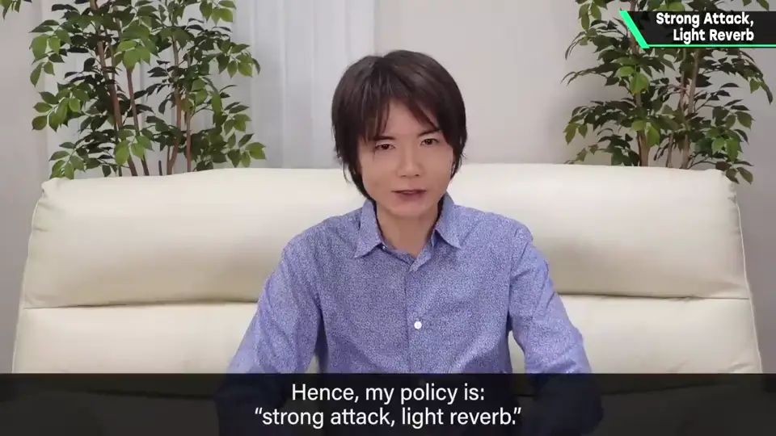
这取决于游戏方针，但不只是好不好听，要细究是否合游戏目的。
自测题
1. 为什么《大乱斗》的命中音要起音强？
立刻返回攻击反应，且在声音洪流中得到手感。 1:10
2. 余响太长有什么问题？
下一个音响起时糊在一起，连打感消失，听不清起点。 1:50
3. 强攻击的命中音理想上何时结束主要部分？
在顿帧（画面停住）期间结束。 2:30